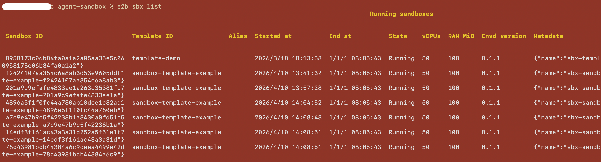

E2B CLI Compatibility Guide¶
This document describes E2B CLI usage in a way that is compatible with the CLI behavior verified in this environment.
Installation¶
Use the official installation instructions from the E2B CLI docs:
After installation, verify your CLI is available:
Authentication¶
Authenticate before sandbox operations:
export E2B_API_KEY=sys-2492a85b10ed4cb083b2c76b181eac96
export E2B_API_URL=https://your.domain/e2b/v1
List sandboxes¶
List running sandboxes (default behavior):

Create sandbox¶
Create a sandbox and connect your terminal to it:
Connect to sandbox¶
Connect to an existing running sandbox by ID:
Example:
Execute commands in sandbox¶
Run a command in a running sandbox:
Examples:
# Basic command
e2b sandbox exec sbx_1234567890 ls -la
# Set working directory
e2b sandbox exec --cwd /home/user sbx_1234567890 pwd
# Run as specific user
e2b sandbox exec --user root sbx_1234567890 whoami
# Pass environment variables (repeatable)
e2b sandbox exec -e FOO=bar -e HELLO=world sbx_1234567890 env
# Run in background
e2b sandbox exec --background sbx_1234567890 python -m http.server 8080